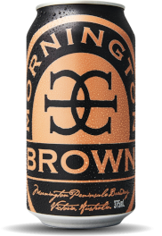

Mornington Brown
Mornington Peninsula Brewery
Mornington, Victoria
375 mL can
5% Alc/Vol
Mornington Brown uses premium malts to deliver wonderful rich flavours of chocolate, nuts and toffee with aromas of brown sugar and raisins. This luxurious ale pours deep brown with hints of red and is elegantly full-bodied, smooth and moreish.
Matt Bebe and Malcom McLean were celebrating Hawthorn's 2008 Premiership when talk turned to beer and breweries and long into the night, the euphoric pair discussed grand visions for a new brewery. Their vision was to start a brewery based on tradition, industry and honesty that identifies with the Mornington Peninsula's heritage of epicurean and leisure opportunities.
“Born in the Mornington Peninsula, our independently crafted beers use only the finest hops and malts. From classic pale ales to seasonal specials, our award-winning range belongs in any crowd, for any event, at any time.”